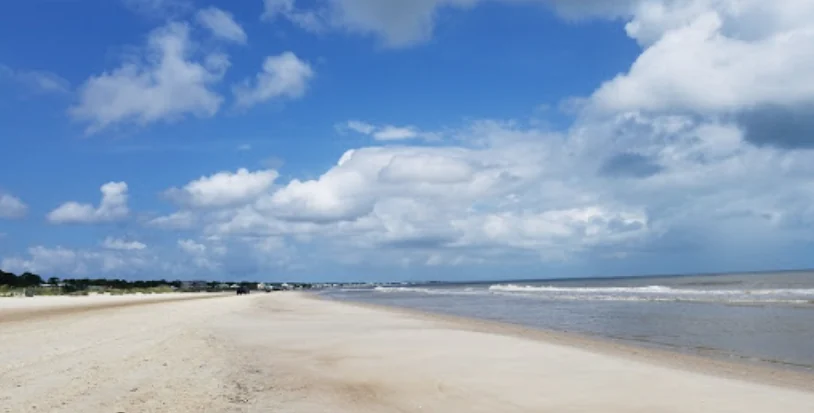
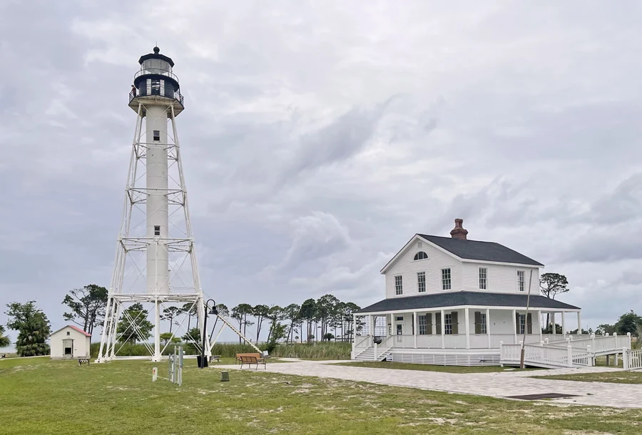
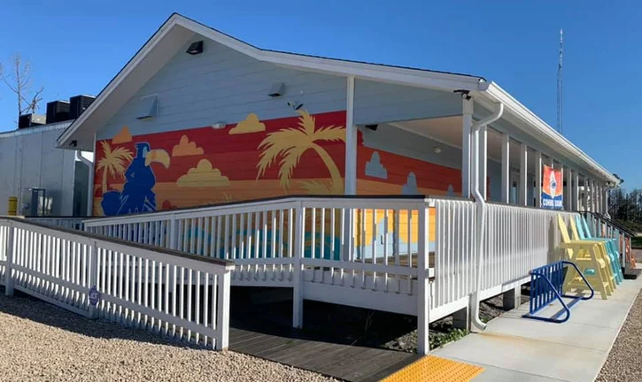

St. Joseph Peninsula State Park →
Walk the beach, explore the dunes, or take a kayak out on the bay.
Photo · Florida State Parks
Local guide
Beach days, seafood stops, and a few places to pick up what you forgot.
Explore
Walk the beach, explore the dunes, or take a kayak out on the bay.
Photo · Florida State Parks

Explore the Gulf-side beach access and the bayside boardwalk.
Photo · Paddle Board Master

Visit the historic lighthouse on the waterfront in Port St. Joe.
Photo · Lighthousefriends.com
Local flavors

The essentials
Your home base
Make DuneReelGood the start of your next Cape getaway.